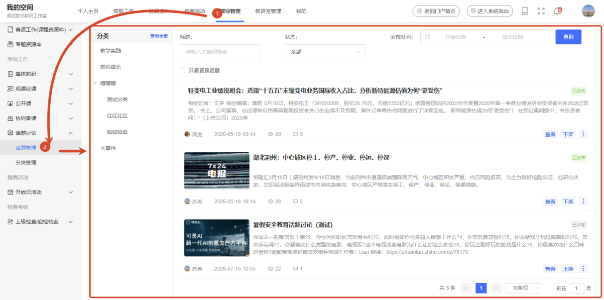
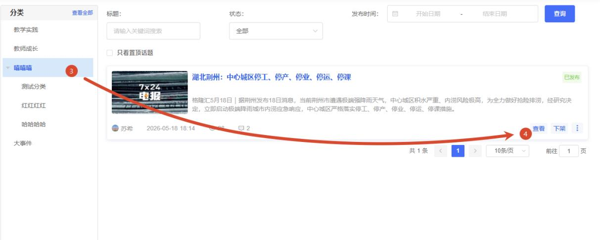
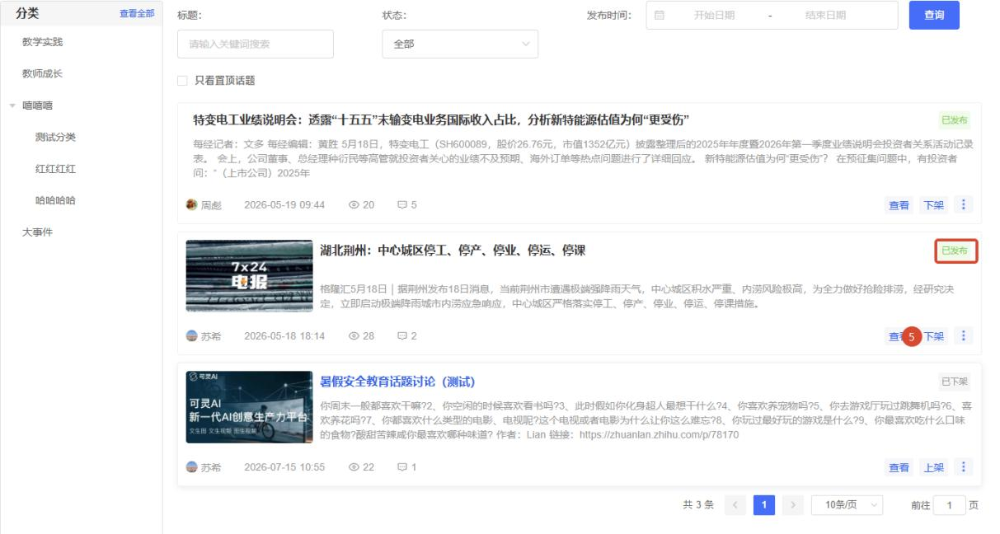
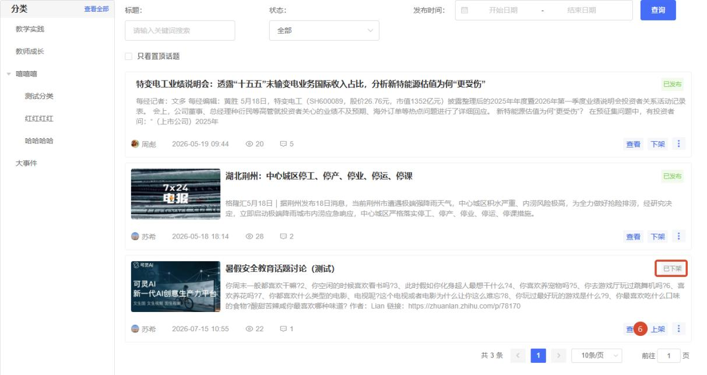
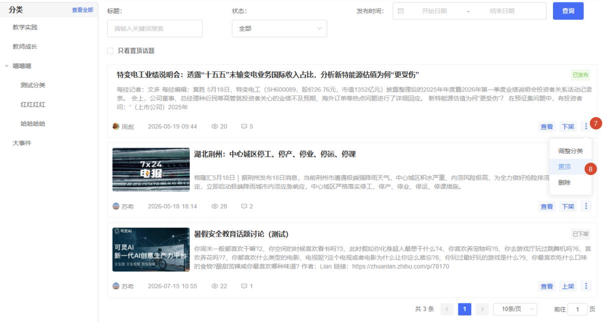
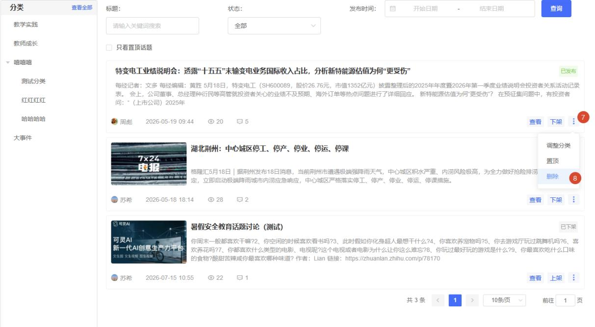
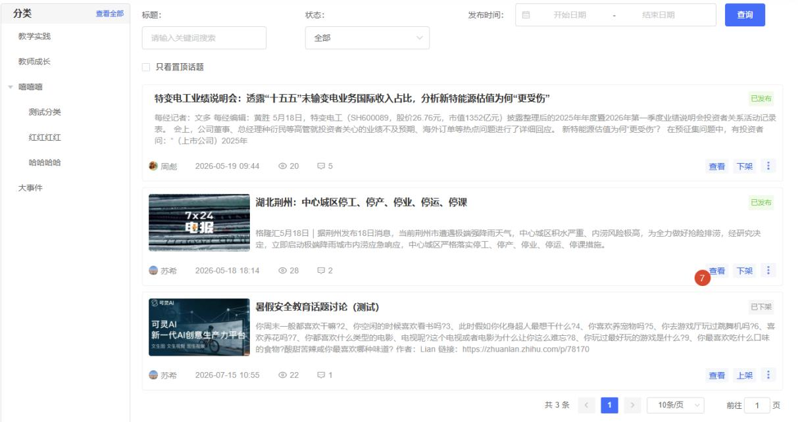
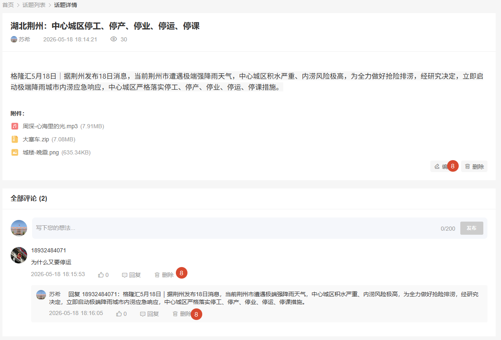
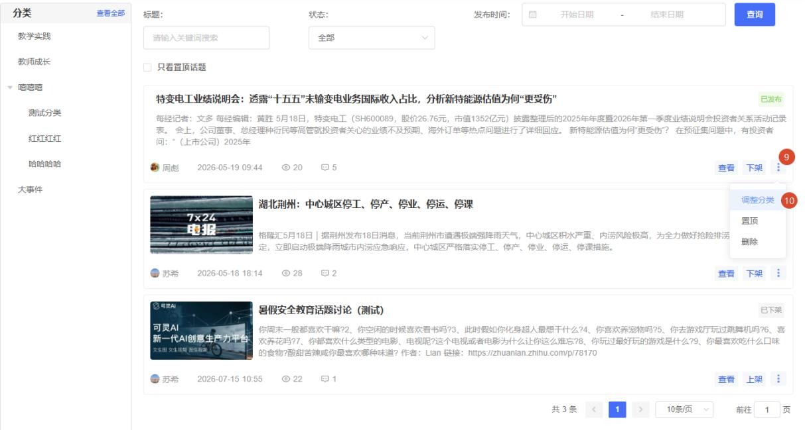
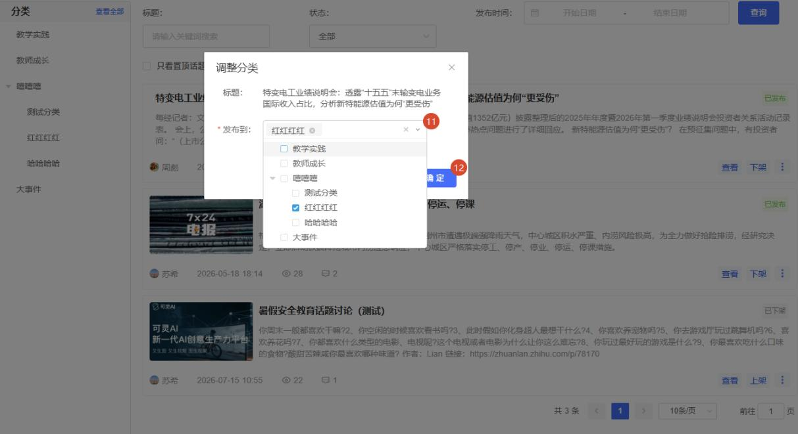

进入工作空间，依次选择【督导管理→话题讨论→话题管理】进入话题讨论管理页面。

查看话题讨论页面左侧为话题分类树形展示区，您可以点击不同的分类层级，快速筛选出对应的话题讨论。
在右侧列表选择目标话题，点击卡片上的 【查看】 按钮，即可浏览该话题的详细内容及用户评论。

下架话题讨论在右侧列表中选择状态为“已发布”的目标话题，点击卡片上的 【下架】 按钮，即可将该话题下架。
话题下架后，其状态将变更为“已下架”，其他用户将无法再浏览该话题讨论及相关内容。

上架话题讨论在右侧列表中选择状态为“已下架”的目标话题，点击卡片上的 【下架】 按钮，即可将该话题下架。
话题下架后，其状态将变更为“已发布”，其他用户可继续浏览该话题讨论及相关内容。

置顶话题讨论在右侧列表中选择目标话题，将鼠标悬停在【︙】图标上以展开更多管理功能，点击 【置顶】 按钮即可完成置顶。
被置顶的话题将固定在列表首位，供用户优先浏览。

删除话题讨论被删除的话题讨论及所有评论内容将无法恢复，请谨慎操作。
方式一：在右侧列表中选择目标话题，将鼠标悬停在【︙】 图标上以展开更多管理功能，点击 【删除】 按钮即可完成删除。

方式二：在右侧列表中选择目标话题，点击 【查看】 按钮进入话题讨论详情页。

若需删除整个话题，点击主贴下方的 【删除】 按钮，即可同步清除话题主贴及所有评论。
若仅需清理特定言论，点击该条用户评论旁的 【删除】按钮即可。

调整话题讨论分类在右侧列表中选择目标话题，将鼠标悬停在 【︙】 图标上以展开更多管理功能，点击 【调整分类】 弹出分类调整窗口。

在弹窗中选择该话题需要调入的新分类，点击确认即可完成分类迁移。
